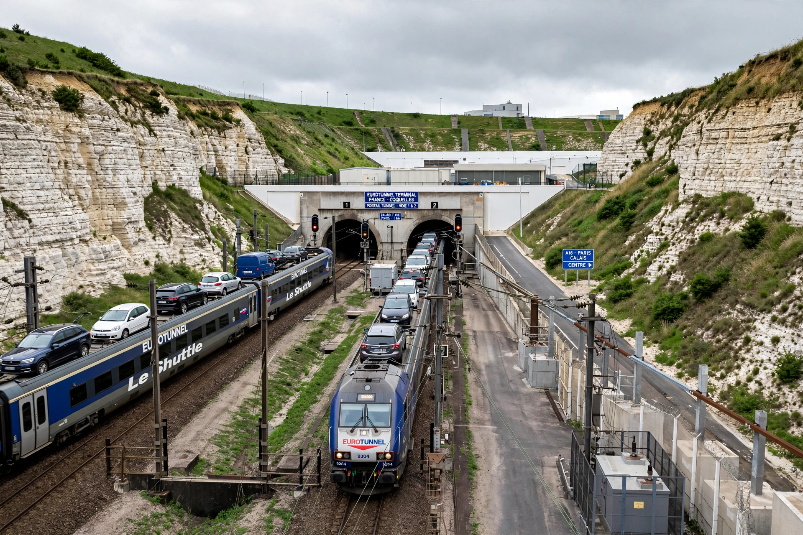

[Image placeholder: The French terminal and tunnel portals at Coquelles]The **Channel Tunnel** (French: Tunnel sous la Manche), sometimes called the Chunnel, is a 50.46 km railway tunnel beneath the English Channel at the Strait of Dover, connecting Folkestone in Kent, England, with Coquelles near Calais in France. Opened in 1994, it is the world's longest undersea tunnel (37.9 km of it is underwater) and carries Eurostar passenger trains, vehicle shuttles (LeShuttle) and freight trains.
Proposals dated back to 1802; a 1970s attempt was abandoned in 1975 over costs. The 1986 Treaty of Canterbury authorised the privately financed project, which cost roughly double its estimate (about £9 billion in total) and involved tunnel-boring machines digging from both coasts through chalk marl. Trains reach 160 km/h in the tunnel; London–Paris by Eurostar takes about 2 hours 15 minutes.
The system comprises two rail tunnels and a smaller service tunnel, with crossover caverns letting trains switch tracks. Vehicle shuttles carry cars, coaches and trucks; juxtaposed border controls mean passengers clear the destination country's checks before boarding.
The tunnel transformed UK–continent travel and trade but was burdened by debt for years; operator Getlink (formerly Eurotunnel) restructured in 2007. The tunnel has faced fires (1996, 2008), power failures, and migration pressures at the Calais end, including the 'Jungle' camp cleared in 2016.